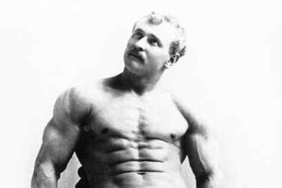
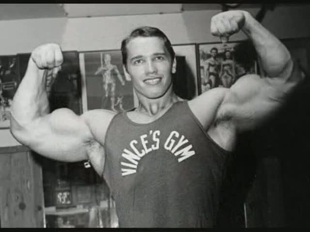
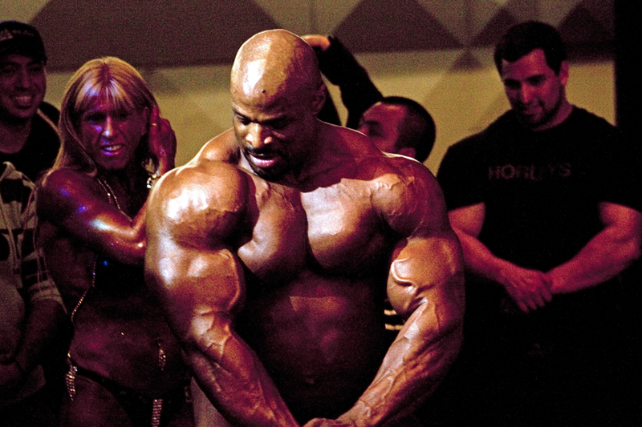

Bodybuilding
Bodybuilding - the process of building and developing muscles, by exercising with weights and high-energy nutrition, with a high content of nutrients, in particular, proteins, sufficient for hypertrophy of skeletal muscles.
To the early stage of the existence of bodybuilding is usually include the period from 1880 to 1953.
Evgeny Sandov an outstanding athlete of the XIX century, is considered the founder of modern bodybuilding.

Despite the fact that anabolic steroids appeared long ago, it is 1970-ies called "uprising anabolic steroids", not only in bodybuilding, but also in other sports. In bodybuilding, this is due to the sharp jump in muscle volumes, starting with Arnold Schwarzenegger, Franco Colombo, Louis Ferrigno, Dorian Yates, Lee Haney, and Paul Demayo and also the emergence of athletes as rich Gaspari and Andreas munzer. Although in the 1970s began an open discussion of the use of anabolic steroids, until 1990 they were legal remedies. In 1990, Congress The United States has included anabolic steroids in the list of "controlled substances". In Canada as a result scandal with Ben Johnson at the Olympics in Seoul steroids were introduced into the criminal code Canada in a specially created for them 6th grade.

In the USSR, bodybuilding was not banned, but did not experience state support, so basically it was a so-called "rocking" (Amateur gyms, usually in basements held by enthusiasts). Initial the gym in the Soviet Union was opened in 1962 in Leningrad, massively " rocking» began to open from the end of 1960-ies throughout the country. With the support of local management, administration of sports halls and culture houses was conducted Amateur tournaments. In 1968, the first open "all-Siberian competition of athleticism" was held in Tyumen», and the second competition in 1969 was the first in the USSR with the participation of foreigners.
In February 1971 in Severodvinsk was the first unofficial championship of the Soviet Union, took first place in Severodvinsk athlete Alexander Ploughshares, the second place — Vladimir Dubinin from Leningrad, the third — Vladimir Homelev from Severodvinsk.
In the modern bodybuilding industry professional generally called bodybuilder, won the qualifying competition as an Amateur and earned a " Pro Card» from the IFBB. Holders of this card are entitled to participate in professional tournaments, for example, the "Arnold classic" and "Night of Champions". In turn, high results, shown in such competitions give them the opportunity to participate in the competition "Mister Olympia.» The title "Mr. Olympia" is the highest award in the field of professional bodybuilding's.

Many bodybuilders during, and after a career begin to engage in various type of activity. Among the most popular among bodybuilders professions it is possible to allocate actors, models, trainers, strippers. Often the choice occurs in favor of the professions for which you want to have beautiful appearance data or significant physical fitness. Today, many bodybuilders we achieved success outside the competition podium. In recent years, due to the spread of ideas of a healthy lifestyle, popular Amateur variety of bodybuilding-fitness. Bodybuilding is popular not only among young people; today in different countries competitions are held among different age categories, up to 80 years. One of the most famous bodybuilders-pensioners - Japanese Tsutomu Tosaka.

Morozov I.S. EVT-16bzu